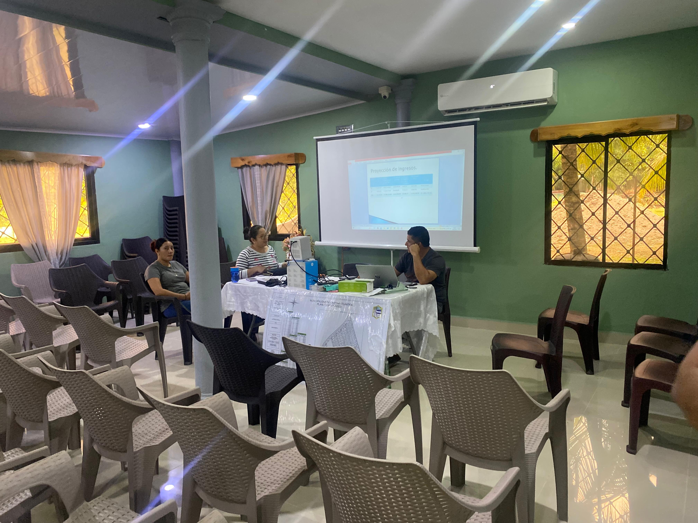
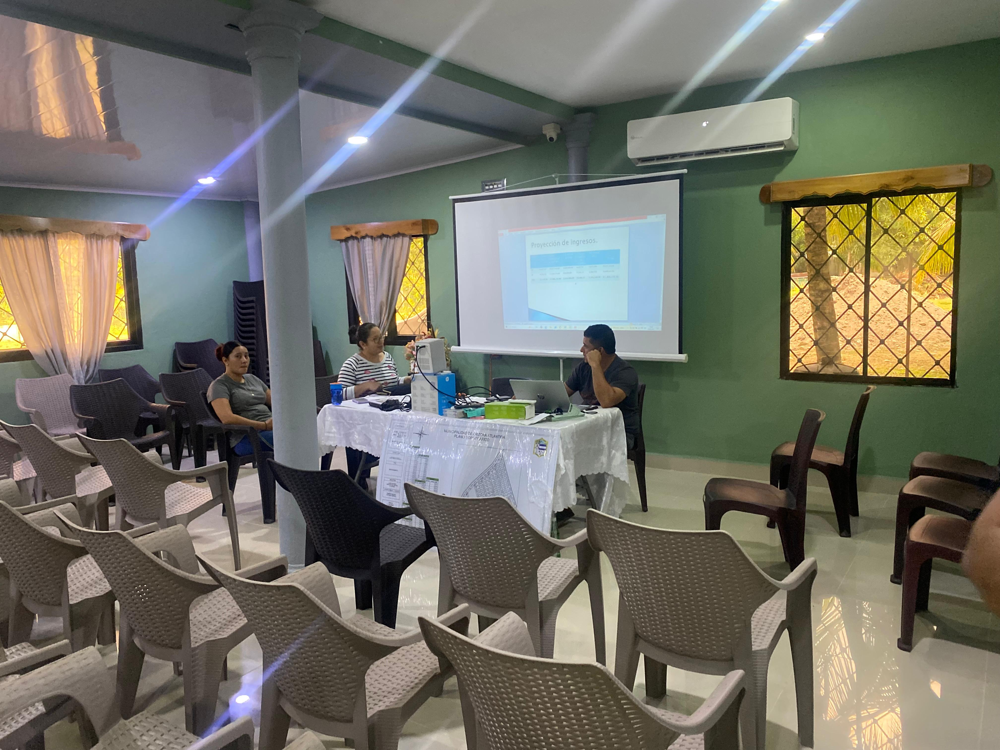

La Caja Rural Caracas convoca a todos los socios a participar en la reunión que se llevará a cabo en el Salón de Reuniones. Este encuentro tiene como finalidad presentar los avances de la institución, revisar proyectos en curso y discutir nuevas oportunidades para el beneficio de todos los asociados.
| Fecha | Viernes 29 de Agosto |
|---|---|
| Hora | 5:00 PM |
| Lugar | Salón de Reuniones - Caja Rural Caracas |
| Convocatoria | Reunión de socios para tratar temas de interés general |
 
